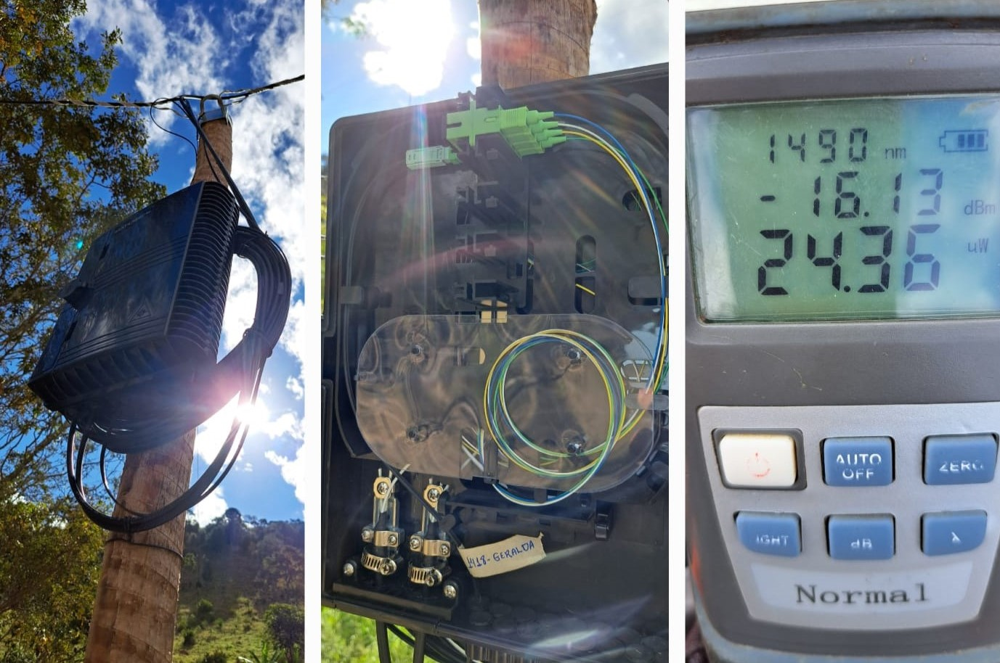

Pacific Star
Descrição do projeto
O projeto foi planejado para atender a uma área específica utilizando duas PONs, que possibilitaram a conexão de 16 CTOs distribuídas estrategicamente. Antes das instalações dos clientes, a rede passou por um processo de certificação da rede, garantindo que todos os parâmetros, como níveis de potência e qualidade de sinal, estivessem dentro dos padrões técnicos exigidos.
Após a certificação, a instalação foi realizada com ajustes precisos para garantir um sinal uniforme e estável em toda a rede. O resultado foi uma infraestrutura robusta e confiável, proporcionando alta qualidade de transmissão e atendendo plenamente às necessidades da região.
← Voltar ao portfolio